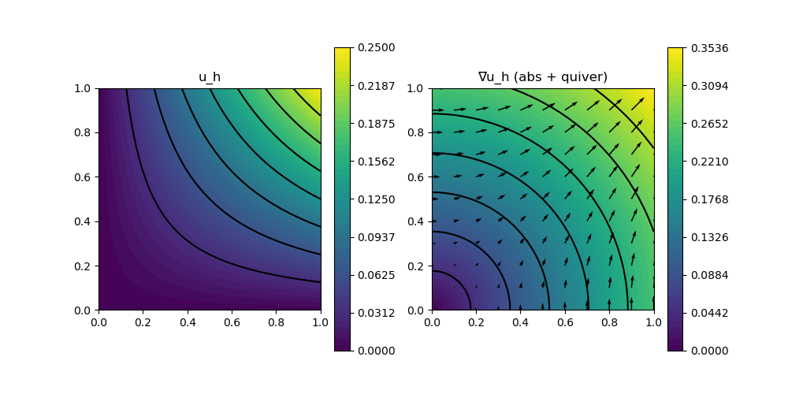

206 : Nonlinear Poisson Transient 2D
This example computes a transient velocity $\mathbf{u}$ solution of the nonlinear Poisson problem
\[\begin{aligned} \mathbf{u}_t - \mathrm{div}(\alpha(u) \nabla \mathbf{u}) & = \mathbf{f}\\ \end{aligned}\]
with (some time-dependent) exterior force $\mathbf{f}$, some diffusion coefficient $\alpha(\mathbf{u}) = (1+\beta\mathbf{u}^2)$. Therein parameter $\beta$ steers the strength of the nonlinearity.
The time integration will be performed by the internal CrankNicolson rule (or optionally BackwardEuler) of GradientRobustMultiPhysics. A manufactureed quadratic-in-space and quadratic-in-time solution is prescribed to test if the solver computes the exact solution.
module Example206_NonlinearPoissonTransient2D
using GradientRobustMultiPhysics
using ExtendableGrids
using GridVisualize
const α = DataFunction((result, u) -> (result[1] = (1+u[1]^2);), [1,1]; Tv = Real, dependencies = "X", name = "1+u(x)^2")
function get_problem_data(t_power)
u = DataFunction((result,x,t) -> (result[1] = x[1]*x[2]*(1-t)^t_power), [1,2]; dependencies = "XT", bonus_quadorder = 2)
ut = eval_dt(u)
Δu = eval_Δ(u)
∇u = eval_∇(u)
∇α = eval_∇(α)
function rhs!(result, x, t) # computes u_t -div(α(u)*grad(u)) = u_t -(∇α ∇u + αΔu)
u_val = u(x, t)
∇u_val = ∇u(x, t)
result .= ut(x,t) .- dot(α(u_val), Δu(x)) .- dot(∇α(u_val) * ∇u_val, ∇u_val)
return nothing
end
f = DataFunction(rhs!, [1,2]; name = "∇(u)", dependencies = "XT", bonus_quadorder = 4)
return u, f
end
# kernel for nonlinear diffusion operator
function diffusion_kernel!(result, input)
# input = [u, grad(u)]
α_val = α(input[1])
result[1] = α_val[1]*input[2]
result[2] = α_val[1]*input[3]
return nothing
end
# everything is wrapped in a main function
function main(; verbosity = 0, Plotter = nothing, nlevels = 3, timestep = 1e-1, T = 0.5, FEType = H1P2{1,2}, time_integration_rule = CrankNicolson, t_power = 2, testmode = false)
# set log level
set_verbosity(verbosity)
# set exact solution and data
u, f = get_problem_data(t_power)
# initial grid and final time
xgrid = uniform_refine(grid_unitsquare(Triangle2D),1)
# prepare nonlinear expression (1+u^2)*grad(u)
nonlin_diffusion = NonlinearForm(Gradient, [Identity, Gradient], [1,1], diffusion_kernel!, [2,3]; name = "((1+#1^2) ∇#2, ∇#T)", bonus_quadorder = 2, newton = true)
# generate problem description and assign nonlinear operator and data
Problem = PDEDescription("nonlinear Poisson problem")
add_unknown!(Problem; unknown_name = "u", equation_name = "nonlinear Poisson equation")
add_operator!(Problem, [1,1], nonlin_diffusion)
add_boundarydata!(Problem, 1, [1,2,3,4], BestapproxDirichletBoundary; data = u)
add_rhsdata!(Problem, 1, LinearForm(Identity, f))
# define error evaluators
L2Error = L2ErrorIntegrator(u, Identity; time = T)
H1Error = L2ErrorIntegrator(∇(u), Gradient; time = T)
NDofs = zeros(Int,nlevels)
Results = zeros(Float64,nlevels,2)
# loop over levels
Solution = nothing
for level = 1 : nlevels
# refine grid
xgrid = uniform_refine(xgrid)
# generate FESpace and solution vector
FES = FESpace{FEType}(xgrid)
Solution = FEVector(FES)
# set initial solution
interpolate!(Solution[1], u)
# generate time-dependent solver
sys = TimeControlSolver(Problem, Solution, time_integration_rule; timedependent_equations = [1], maxiterations = 5)
# use time control solver by GradientRobustMultiPhysics
advance_until_time!(sys, timestep, T)
# calculate L2 and H1 error and save data
NDofs[level] = length(Solution.entries)
Results[level,1] = sqrt(evaluate(L2Error,Solution[1]))
Results[level,2] = sqrt(evaluate(H1Error,Solution[1]))
end
if testmode == true
return Results[end,2]
else
p = GridVisualizer(; Plotter = Plotter, layout = (1,2), clear = true, resolution = (1000,500))
scalarplot!(p[1,1], xgrid, nodevalues_view(Solution[1])[1], levels = 7, title = "u_h")
scalarplot!(p[1,2], xgrid, view(nodevalues(Solution[1], Gradient; abs = true),1,:), levels = 7, title = "∇u_h (abs + quiver)")
vectorplot!(p[1,2], xgrid, evaluate(PointEvaluator(Solution[1], Gradient)), spacing = 0.1, clear = false)
# print/plot convergence history
print_convergencehistory(NDofs, Results; X_to_h = X -> X.^(-1/2), ylabels = ["|| u - u_h ||", "|| ∇(u - u_h) ||"])
end
end
function test()
error1 = main(; nlevels = 1, FEType = H1P2{1,2}, t_power = 1, time_integration_rule = BackwardEuler, testmode = true)
error2 = main(; nlevels = 1, FEType = H1P2{1,2}, t_power = 2, time_integration_rule = CrankNicolson, testmode = true)
return max(error1,error2)
end
endThis page was generated using Literate.jl.
Default output:
julia> Example206_NonlinearPoissonTransient2D.main()
┌ Info: ----- Preparing time control solver for nonlinear Poisson problem using CrankNicolson -----
└ Equation (1.1) nonlinear Poisson equation for u (discretised by (H1P2{1,2}, ndofs = 145), timedependent = yes
[ Info: Advancing in time from 0.0 until 0.5
STEP | TIME | LSRESIDUAL | NLRESIDUAL | RUNTIME | CHANGE
| | (total) | (total) | (s) | u
1 | 1.0000e-01 | 2.2297e-15 | 1.8341e-12 (3) | 3.759e+00 | 7.8835e-01
2 | 2.0000e-01 | 1.7190e-15 | 2.5758e-13 (3) | 4.116e-02 | 7.0536e-01
3 | 3.0000e-01 | 1.1362e-15 | 2.4105e-14 (3) | 4.101e-02 | 6.2238e-01
4 | 4.0000e-01 | 8.6030e-16 | 1.8864e-15 (3) | 4.189e-02 | 5.3940e-01
5 | 5.0000e-01 | 5.5616e-16 | 1.1334e-15 (3) | 4.209e-02 | 4.5641e-01
┌ Info: ----- Preparing time control solver for nonlinear Poisson problem using CrankNicolson -----
└ Equation (1.1) nonlinear Poisson equation for u (discretised by (H1P2{1,2}, ndofs = 545), timedependent = yes
[ Info: Advancing in time from 0.0 until 0.5
STEP | TIME | LSRESIDUAL | NLRESIDUAL | RUNTIME | CHANGE
| | (total) | (total) | (s) | u
1 | 1.0000e-01 | 4.7037e-15 | 1.0266e-12 (3) | 2.105e-01 | 1.5025e+00
2 | 2.0000e-01 | 3.4165e-15 | 1.4502e-13 (3) | 1.648e-01 | 1.3444e+00
3 | 3.0000e-01 | 2.8601e-15 | 1.4426e-14 (3) | 1.714e-01 | 1.1862e+00
4 | 4.0000e-01 | 1.6104e-15 | 3.6885e-15 (3) | 2.204e-01 | 1.0281e+00
5 | 5.0000e-01 | 1.1305e-15 | 2.3388e-15 (3) | 1.597e-01 | 8.6989e-01
┌ Info: ----- Preparing time control solver for nonlinear Poisson problem using CrankNicolson -----
└ Equation (1.1) nonlinear Poisson equation for u (discretised by (H1P2{1,2}, ndofs = 2113), timedependent = yes
[ Info: Advancing in time from 0.0 until 0.5
STEP | TIME | LSRESIDUAL | NLRESIDUAL | RUNTIME | CHANGE
| | (total) | (total) | (s) | u
1 | 1.0000e-01 | 1.0162e-14 | 5.4116e-13 (3) | 7.138e-01 | 2.9345e+00
2 | 2.0000e-01 | 7.0294e-15 | 7.8604e-14 (3) | 7.568e-01 | 2.6256e+00
3 | 3.0000e-01 | 5.3781e-15 | 1.1841e-14 (3) | 6.996e-01 | 2.3167e+00
4 | 4.0000e-01 | 3.6845e-15 | 6.7814e-15 (3) | 7.065e-01 | 2.0078e+00
5 | 5.0000e-01 | 2.4024e-15 | 4.7878e-15 (3) | 7.061e-01 | 1.6989e+00
ndofs | || u - u_h || order | || ∇(u - u_h) || order |
============|==========================|==========================|
145 | 2.648e-14 0.00 | 5.278e-13 0.00 |
545 | 2.764e-14 -0.06 | 5.356e-13 -0.02 |
2113 | 2.777e-14 -0.01 | 5.366e-13 -0.00 |